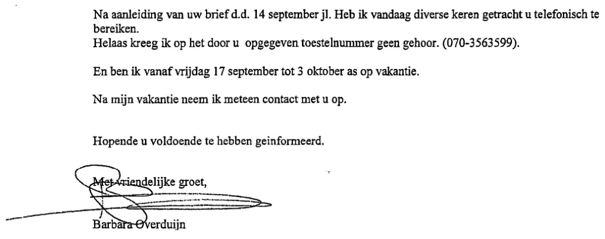

Prueba · Fax
Barbara Overduyn al Defensor del Pueblo de los Países Bajos, fax firmado, 16 de septiembre de 1999
El pasaje
«En relación con su carta del 14 de septiembre pasado, hoy he intentado varias veces comunicarme con usted por teléfono. Lamentablemente, no obtuve respuesta en la extensión que usted me indicó. (070-3563599). Y estaré de vacaciones desde el viernes 17 de septiembre hasta el 3 de octubre próximo. Después de mis vacaciones me pondré inmediatamente en contacto con usted. Esperando haberlo informado suficientemente. Saludos cordiales, Barbara Overduijn». Página 1, el texto del fax con la firma debajo. Traducido del neerlandés; el texto original figura a continuación.
Texto original
“Na aanleiding van uw brief d.d. 14 september jl. Heb ik vandaag diverse keren getracht u telefonisch te bereiken. Helaas kreeg ik op het door u opgegeven toestelnummer geen gehoor. (070-3563599). En ben ik vanaf vrijdag 17 september tot 3 oktober as op vakantie. Na mijn vakantie neem ik meteen contact met u op. Hopende u voldoende te hebben geinformeerd. Met vriendelijke groet, Barbara Overduijn” Las grafías «Na aanleiding» en lugar de «Naar aanleiding» (en relación con), «geinformeerd» (informado) sin diéresis y «as» en lugar de «aanstaande» (próximo) son de la propia autora, al igual que la mayúscula en «jl. Heb ik» (pasado, he).

Por qué importa este documento
En este fax del 16 de septiembre de 1999 al Defensor del Pueblo de los Países Bajos (Nationale ombudsman), Barbara Overduyn firma como «Barbara Overduijn». La grafía «Overduin» del libro se había tomado del servicio de inteligencia militar, el MID. El ensayo recuerda que la demandante reprochó a Giltay una falta de ortografía en su apellido, y que a continuación apareció este fax, que demostraba negro sobre blanco que ella había escrito mal su propio apellido. Para la jueza de medidas provisionales M.E. Groeneveld-Stubbe, la grafía del apellido de Overduyn era una de las inexactitudes que suscitaban dudas sobre el rigor del autor, y con ello uno de los fundamentos de la prohibición total. En abril de 2016, sin embargo, el Tribunal de Apelación de La Haya resolvió que esas inexactitudes, una edad y la grafía de un apellido, no bastaban para poner en duda el rigor del autor.
Procedencia
- Documento
- Fax, una página, enviado a las 10:45 según la línea de transmisión de la parte superior de la página
- Remitente
- Barbara Overduyn, que firma como «Barbara Overduijn» bajo una firma manuscrita
- Destinatario
- El Defensor del Pueblo de los Países Bajos, Postbus 29729, 2502 LS Den Haag (La Haya)
- Fecha
- 16 de septiembre de 1999
- Lugar y fecha
- La línea mecanografiada de lugar y fecha dice «Den Haag, 16 oktober 1999» (La Haya, 16 de octubre de 1999); esa fecha no puede ser correcta. La línea de transmisión de la parte superior de la página indica 16/09, DON (jueves), 10:45. Al recibirlo, el Defensor del Pueblo le puso el sello 16 SEP 1999, y el propio texto responde a una carta del 14 de septiembre y anuncia unas vacaciones a partir del viernes 17 de septiembre
- Referencia
- «Uw nummer 9807787017» (su número), el número de expediente del Defensor del Pueblo, que la remitente indica aquí
- Asunto
- Una respuesta a la carta del Defensor del Pueblo del 14 de septiembre de 1999. La remitente había intentado varias veces localizarlo por teléfono el día en que escribió, iba a estar de vacaciones del 17 de septiembre al 3 de octubre y se pondría en contacto con él inmediatamente después
- Anotación
- «Spoed!» (¡urgente!) está escrito a mano en la parte superior de la página
- Recibido
- Sello de fecha del Defensor del Pueblo, 16 SEP 1999; el número de registro escrito a mano en el sello no puede leerse con certeza
- Idioma
- Neerlandés
- Páginas
- 1
- En el libro
- El capítulo 16 explica cómo los oficiales de inteligencia varían la grafía de su nombre para sembrar confusión (página 170 de la edición neerlandesa, página 162 de la inglesa); la nota 49 menciona grafías divergentes del apellido de Overduyn y de los de otros oficiales de inteligencia (páginas 231 y 222, respectivamente)
- Conservado por
- El Defensor del Pueblo recibió y selló el fax; la copia publicada aquí procede del archivo del autor
- Véase también
- Tribunal de Distrito de La Haya, sentencia del 14 de diciembre de 2015 (ECLI:NL:RBDHA:2015:15050)Tribunal de Apelación de La Haya, sentencia del 12 de abril de 2016 (ECLI:NL:GHDHA:2016:870)
Citado en:
- el ensayo «La prohibición cayó, el libro quedó en pie» en el capítulo (1) «Un precedente único»
- la sección de voces bajo el epígrafe «Prohibición total».
Documento: https://
Modificado por última vez el 13 de septiembre de 2026, consultado el 27 de noviembre de 2026.

Esta página es una ficha de prueba del libro El general del encubrimiento de Edwin Giltay y del sitio web que lo acompaña.